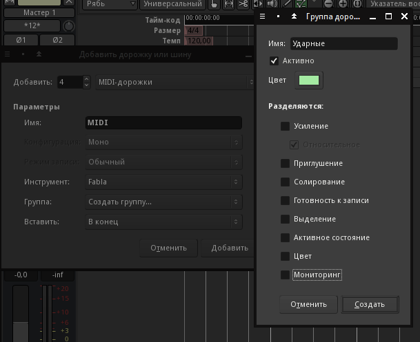
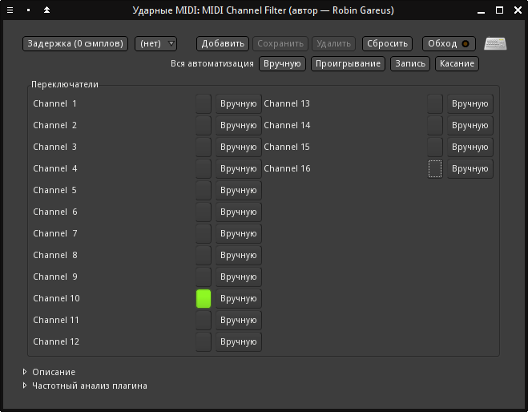
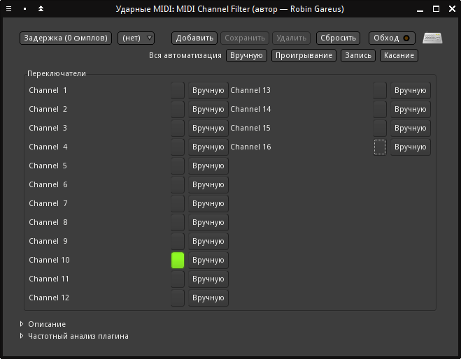
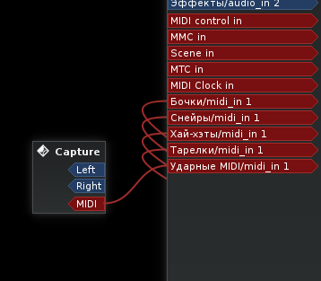

В сети можно найти немало источников для скачивания бесплатных семплов. По качеству они обычно не хуже коммерческих и часто публикуются для демонстрации больших библиотек. Для того, чтобы с чего-то начать, в попробуем использовать Tri Sample Set, состоящий из пяти частей (внизу ссылка на Next Post ведёт к следующему тому).
Выбор для создания партии ударных в KXStudio не очень обширен.
Остановимся на варианте Fabla, как наиболее простом и надёжном.
Лучше использовать сразу несколько экземпляров семплера: для бочек, снейров, хай-хэтов и больших тарелок. Получим четыре стерео-канала ударных, на которые можно раздельно навешивать плагины обработки. Выход с них потом отправится на шину Ударные для общей обработки, например, компрессором.
Итак, добавляем четыре MIDI-дорожки с инструментом Fabla, попутно создав для них пустую группу Ударные. Переименуем дорожки, как показано на втором рисунке.
Подключим их звуковые выходы к шине Ударные в окне микшера. Правым щелчком на кнопке входов шины вызываем Матрицу маршрутизации и делаем нужные соединения на табе Дорожки Ardour.

В диалоге выбора файлов Fabla, к сожалению, нельзя прослушивать звук добавляемых семплов. Зато в Ardour есть полезный диалог выбора аудио-файлов с предварительным прослушиванием по наведению. Вызывается он по Ctrl+I. Подходящий файл можно запомнить и загрузить потом в драм-семплер.
По этой ссылке лежит архив с упоминаемыми дальше файлы. Архив распаковать в папку семплов проекта /home/%username%/Audio/Composition/Main/Samples, откуда потом добавлять их в Fabla.
Чтобы открыть интерфейс Fabla, нужно дважды кликнуть на его названии в линейке микшера. Линейка доступна не только в окне микшера, но и в редакторе - слева при выборе любой дорожки. Выберем Бочки и откроем интерфейс Fabla.
Загрузим две бочки, как указано в таблице. Семпл загружается правым щелчком по его ячейке. Номера ячеек считаются слева направо снизу вверх.
| Позиция | Имя файла |
|---|---|
| 1 | Kick 006 - Little Room |
| 2 | Kick 008 - Lunar |
Для дорожки Снейры загрузим следующие семплы на вторую строчку снизу:
| Позиция | Имя файла |
|---|---|
| 5 | Snare 010 - Notched Combo |
| 6 | Snare 026 - Cloud - TRI |
| 7 | Clap 005 - Elements |
| 8 | Snare 022 - Crunkier |
Звуки для дорожки Хай-хэты, загружаем на третью снизу строчку:
| Позиция | Имя файла |
|---|---|
| 9 | Hihat 003 - Traditional Chop |
| 10 | HiHat 004 - Roomy Pedal |
| 11 | HiHat Open 0015 - Deadweight |
Наконец, семплы для дорожки Тарелки, загружаем на верхнюю строчку:
| Позиция | Имя файла |
|---|---|
| 13 | Crash 002 - Milo |
| 14 | Ride 001 - Like That |
| 15 | Crash 002 - Mindenergy |
| 16 | Ride 002 - Lil Baby |
Начальный драмкит готов.
Сейчас экземпляры Fabla принимают события по всем MIDI-каналам. Исправим это и ограничимся только 10-ым, который традиционно используется для ударных. Создадим дополнительную дорожку Ударные MIDI. Она будет принимать MIDI-данные, обрабатывать их и рассылать по каналам с Fabla. В поле Инструмент указываем -нет-.
Выделим новую дорожку в редакторе. В линейке микшера правым щелчком мыши вызовем матрицу маршрутизации на кнопке выходов (внизу над кнопкой Комментарии). Если выход не виден в таблице, нужно увеличить ширину диалогового окна. Соединяемся с входами дорожек Fabla. К собственному входу дорожку подключать, конечно же, не нужно.
Для фильтрации используем MIDI-плагин mda MIDI Channel Filter.
 

В комнате Claudia Пульт подключим MIDI-вход к новой дорожке и проверим клавиатурой, всё ли правильно играет по десятому каналу.
Каналы ударных в окне редактора нам не пригодятся, их можно скрыть, как мы это прежде сделали с шинами групп. Осталось в окне микшера закрепить мониторинг входа на дорожках ударных (нажать кнопки Вход). Без этого при включении воспроизведения каждый из экземпляров Fabla будет пытаться воспроизвести MIDI только со своей дорожки, игнорируя Ударные MIDI.